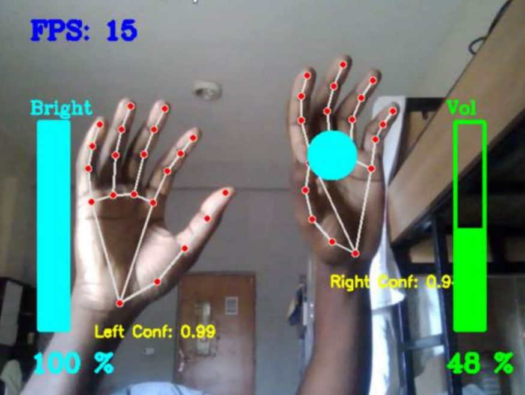
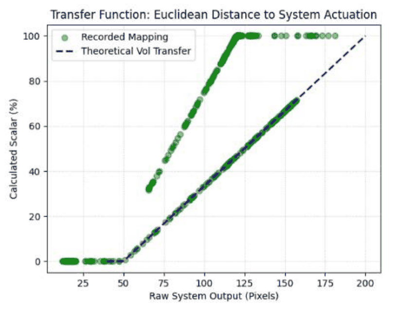

Research
I have cared for my parents and other older adults, and watched computers and phones become harder for them to use. My thesis turned that into research questions.
What I want to study
How older adults perceive on-screen feedback and remember gestural interfaces, and whether gestures they define themselves are easier to recall than gestures chosen for them.
In my thesis I chose every gesture myself, with no way to tell whether an older person could see the feedback clearly or remember the gestures a day later. My thesis ended by recommending that users define their own gestures. That is the question I want to take further.
Longer term, I want to help build HCI research in Nigeria, where older adults rarely take part in studies.
Thesis: controlling a computer with just a webcam
Cognitive Vision-Based Hand Gesture Recognition System for Media and Accessibility Control
Where the idea came from, and how it works
A mouse and keyboard can be tiring or painful for people with limited fine motor control. I wanted to find out whether someone could control a computer with hand gestures alone, using only a webcam and a laptop processor, with no depth sensor or GPU.
The system tracks both hands in Python with Google MediaPipe and OpenCV. The right hand sets volume from the gap between thumb and index finger, and brightness from how close the palm is to the camera, using palm size as a stand-in for depth. The left hand plays or pauses with a timed double tap, and skips with a pinch and drag.

Mean latency from gesture to action, under my 50 ms limit
In good light, and 15–20 in dim light
Average CPU use on a consumer laptop
What went wrong, and what I changed
In early tests the volume drifted when the lighting changed, because the detected landmarks shifted slightly. I added a clutch: volume only responds while three fingers are folded, so stray movements and small tremors are ignored.
My first brightness control used the gap between two fingers and did not work well, so I replaced it with the palm-depth measure. MediaPipe also sometimes labelled the right hand as the left, so I added fallback logic to tell them apart.
How I tested it
I measured latency at each stage of the pipeline and tested the system in dim light and with crossed hands, not only in ideal conditions. All five functional test cases passed.
I wrote all of the code, ran the tests and wrote the report, with guidance from my supervisor.

What surprised me
Passing tests did not mean the mapping was right. When I plotted the volume the system produced against the mapping I intended, a second, steeper line appeared: the same gesture could give different volumes, most likely because the hand's distance from the camera changes the pixel gap between the fingers.
That is when I started caring less about whether a system works and more about whether people can use it.